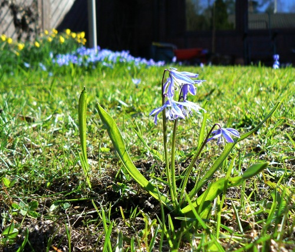
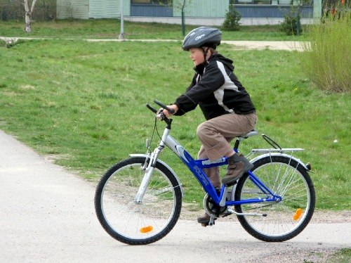
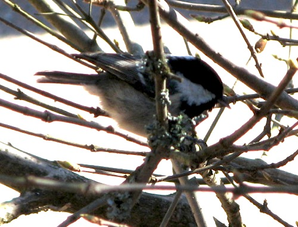
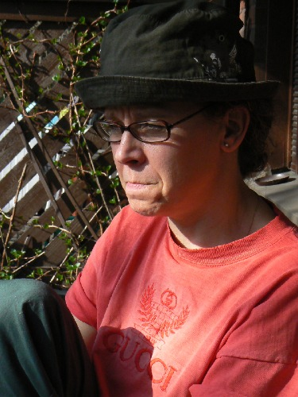

Huhtikuu 2008 |
Kevättä odotellenHuhtikuu oli eräänlainen välikuukausi. Pääsiäinen oli tänä vuonna jo maaliskuun puolella ja kevään juhlat, vappu ja äitienpäivä, vasta tulossa toukokuussa. Huhtikuun alku meni 50-vuotispäivistä "toipumiseen". Juhlista jääneitä herkkuja syötiin vielä toista viikkoa pippaloiden jälkeen. Muutenkin aktiiviteettien osalta oli hiljaiseloa. Valokuvia ei kameroiden muistikorteilta löytynyt kovinkaan montaa. Kotisivujen päivityskin oli kovasti myöhässä. Sen verran sillä saralla kuitenkin oli edistystä, että innostuin opiskelemaan JavaScript-ohjelmointia, ja niinpä kotisivuilta löytyy nyt helmi- ja maaliskuulta kuvaesitykset, joissa voi joko selata tai katsoa automaattisesti pyörivänä esityksenä kyseisen kuukauden kuvia. Samin uusi polkupyöräLoppukuusta, kun sää alkoi muuttua aurinkoiseksi, kävimme lunastamassa Samille annetun synymäpäivälupuksen eli ostimme Samille uuden polkupyörän. Nyt on pyörässä enemmän kokoa ja on siinä muutama vaihdekin, että jaksaa paremmin polkea Kalkkivuorentien mäen ylös. Pyörää on käyty jo useamman kerran kokeilemassa ja ihan hyväksi se on havaittu. |
Kuukauden sääHuhtikuun lopulla koettiin miellyttävä lämpöaalto, jota kesti viikon verran. Parissa päivässä koivuihin ilmaantui lehdet, joita ei enää voinut kutsua vain hiirenkorviksi. Leskenlehdet, sinivuokot ja valkovuokotkin kukkivat täyttä häkää. Lämpötila nousi kesäisiin lukemiin, jopa yli kahdenkymmenen asteen. Kuukauden ajatus"Joka vähiten odottaa huomiselta, saa siltä eniten." - Epikuros, kreikkalainen filosofi - Kuukauden kuvaNuuskamuikkunen saapuu keväisin |